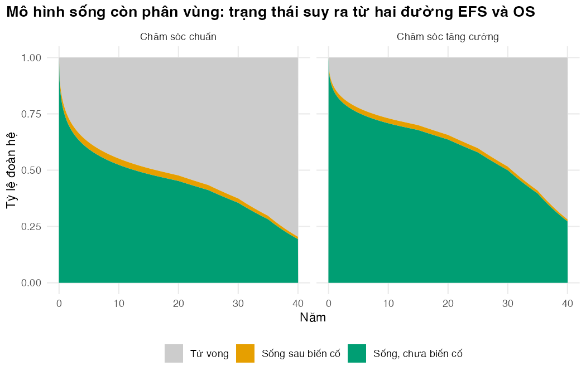
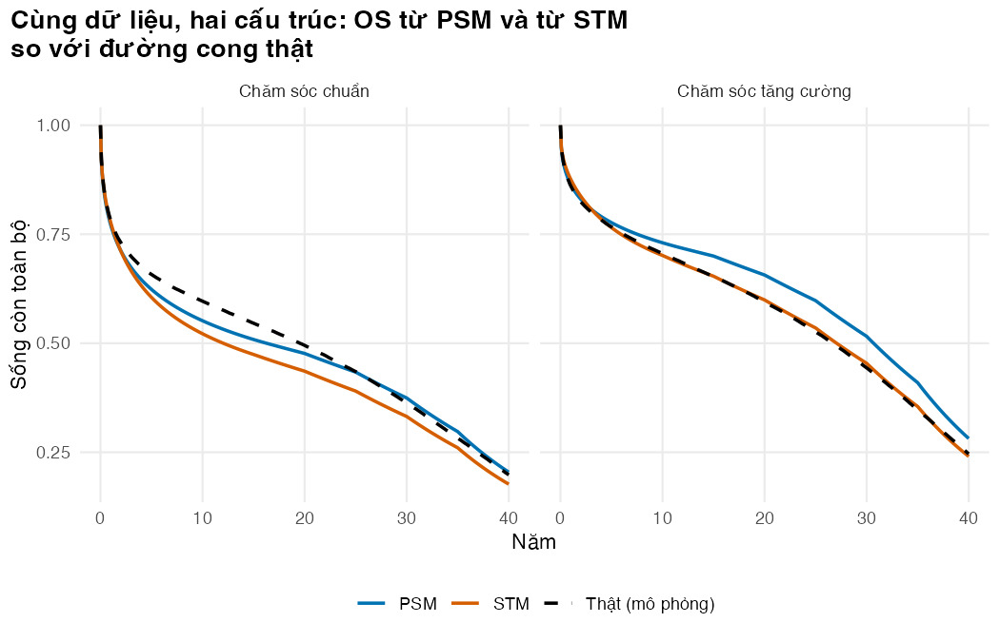

Dựng PSM ba trạng thái từ hai đường cong, tính chi phí-hiệu quả, và so với mô hình chuyển trạng thái
Vì sao bạn nên quan tâm?
Chương trình Chống lao Quốc gia và cơ quan BHYT được đề nghị chi cho gói chăm sóc tăng cường: khám hằng tuần và thêm xét nghiệm CD4, tải lượng HIV trong 6 tháng đầu điều trị lao. Theo giá dịch vụ BHYT, gói tốn khoảng 2,300,000 VNĐ mỗi người, bằng 58 bát phở hay gần 10 ngày lương tối thiểu vùng I (Bộ Y tế 2024; Nhadautu.vn 2025; Chính phủ 2025). Nếu cả 5,200 người mắc lao có HIV ước tính mỗi năm (World Health Organization 2026) đều nhận gói, ngân sách vào khoảng 12.0 tỷ đồng một năm, chưa kể tiền ARV và khám định kỳ cho những người được cứu sống. Bài này giúp bạn tính ICER và NMB của gói bằng mô hình sống còn phân vùng, và kiểm tra cấu trúc mô hình có làm đổi câu trả lời không.
Mục tiêu học tập
Sau bài này, bạn có thể:
Dựng mô hình sống còn phân vùng (PSM) từ sống còn không biến cố (event-free survival, EFS) và sống còn toàn bộ (overall survival, OS), rồi tính năm sống, QALY và chi phí.
Dựng mô hình chuyển trạng thái (STM) từ cùng dữ liệu và so với PSM, tách sai số mẫu khỏi sai số cấu trúc.
Nêu các giới hạn cấu trúc của PSM.
Ý chính
PSM không có xác suất chuyển trạng thái: EF = S_EFS(t), PP = S_OS(t) − S_EFS(t), D = 1 − S_OS(t). Thời gian sau biến cố là diện tích giữa hai đường.
PSM dựng được từ đường cong đã công bố, không cần IPD từng chuyển tiếp, nên phổ biến trong thẩm định thuốc ung thư (Woods và c.s. 2020).
EFS và OS được ngoại suy độc lập: phải chặn EFS ≤ OS, và thời gian sau biến cố là hiệu của hai đại lượng bất định.
PSM không có liên kết cấu trúc giữa biến cố và tử vong: đổi điều trị sau biến cố không làm OS đổi (Woods và c.s. 2020).
Chênh lệch PSM, STM và đường cong thật gồm sai số mẫu; chỉ lặp lại nhiều thử nghiệm mới tách được.
Nội dung
Ý tưởng của PSM
Mô hình Markov ở M02 đẩy đoàn hệ qua ma trận chuyển. PSM không có mũi tên nào, chỉ “chia” đoàn hệ ở mỗi thời điểm theo các đường sống còn (Woods và c.s. 2017):
“Biến cố” là thất bại hoặc tái phát lao, hay bệnh chỉ điểm AIDS mới. Mỗi đường cong được khớp, ngoại suy và thêm tử vong nền như Bài 2 và Bài 3.
flowchart TB subgraph PSM["PSM: chia đoàn hệ theo hai đường cong"] direction LR A["S_EFS(t)"] --> EF1["EF = S_EFS"] B["S_OS(t)"] --> PP1["PP = S_OS − S_EFS"] B --> D1["D = 1 − S_OS"] end subgraph STM["STM: ước lượng từng chuyển tiếp"] direction LR EF2["EF"] -->|"h12(t)"| PP2["PP"] EF2 -->|"h13(t)"| D2["D"] PP2 -->|"h23"| D2 end
flowchart TB
subgraph PSM["PSM: chia đoàn hệ theo hai đường cong"]
direction LR
A["S_EFS(t)"] --> EF1["EF = S_EFS"]
B["S_OS(t)"] --> PP1["PP = S_OS − S_EFS"]
B --> D1["D = 1 − S_OS"]
end
subgraph STM["STM: ước lượng từng chuyển tiếp"]
direction LR
EF2["EF"] -->|"h12(t)"| PP2["PP"]
EF2 -->|"h13(t)"| D2["D"]
PP2 -->|"h23"| D2
end
Diện tích dưới đường cong
Với chu kỳ tháng, năm sống là \(\sum_m \tfrac{1}{12}\,\overline{S}_{\text{OS}}(m)\), với \(\overline{S}(m)\) là trung bình của S đầu và cuối tháng (hiệu chỉnh trong chu kỳ theo quy tắc hình thang, M02 Bài 3). Chi phí và QALY nhân tỷ lệ mỗi trạng thái với chi phí và thỏa dụng của nó, chiết khấu ở giữa chu kỳ. evaluate_occupancy() nhận mọi ma trận tỷ lệ trạng thái (PSM, STM, đường cong thật) nên dùng chung một công thức.
Chi phí đơn vị (VNĐ, năm giá 2025) do build_inputs() tính: đơn giá dùng chung của khóa học (giá khám, ngày giường, xét nghiệm theo bảng giá BHYT (Bộ Y tế 2024), giá ARV TLD của Global Fund (The Global Fund 2026), giá thuốc lao 6 tháng theo bảng tóm tắt phác đồ của Treatment Action Group (McConnell 2025)) nhân với lượng chăm sóc trong params/model_inputs.csv. Một tháng chăm sóc HIV khi ổn định tốn 167,000 VNĐ (ARV, 4 lượt khám mỗi năm vì người ổn định được cấp thuốc tới 90 ngày (Cục Phòng, chống HIV/AIDS (Bộ Y tế) 2022), một xét nghiệm tải lượng HIV mỗi năm); một tháng điều trị lao 330,000 VNĐ; gói tăng cường 385,000 VNĐ mỗi tháng trong 6 tháng đầu; một tháng sau biến cố 1,148,000 VNĐ vì có ngày nằm viện. Giá là thật, còn số lượt khám, số ngày nằm viện của gói và của trạng thái sau biến cố là giả định (giá trị minh họa). Thỏa dụng khi chưa có biến cố là 0.65, trung bình EQ-5D-5L của người sống chung với HIV ở ba thành phố Việt Nam (Tran, Ohinmaa, và Nguyen 2012), tính theo bộ giá trị chuyển đổi tạm thời của Thái Lan vì khi đó chưa có bộ giá trị Việt Nam (xem M09). Mức giảm sau biến cố (0.07) là chênh lệch giữa toàn mẫu và nhóm CD4 ≤200 (0.58) trong cùng nghiên cứu, gần đúng cho người vừa tái phát lao hay mắc bệnh chỉ điểm AIDS.
Kết quả của PSM
AIC tổng hai nhánh chọn log-chuẩn cho cả OS và EFS. Chăm sóc tăng cường đem lại thêm 2.42 QALY mỗi người (chiết khấu 3% mỗi năm, tỷ lệ chung của khóa học) với chi phí thêm 7,600,000 VNĐ; NMB gia tăng ở ngưỡng 1 × GDP bình quân đầu người, 125,500,000 VNĐ/QALY (Cục Thống kê (Bộ Tài chính) 2026; Ong và c.s. 2026), là 296,300,000 VNĐ, ICER: 3,200,000 VNĐ/QALY, bằng 2.5% ngưỡng. Chỉ 28% chi phí gia tăng là tiền gói; phần còn lại là ARV, khám định kỳ và chăm sóc cho những người sống thêm. Tiền làm tròn tới 100,000 VNĐ vì lượng chăm sóc là giả định; NMB dùng được cả khi ICER không xác định. Cỡ hiệu quả của gói được đặt bằng cỡ hiệu quả của ART sớm trong CAMELIA, một giả định chuyển giao (gói của ta không phải ART sớm), nên đây không phải bằng chứng về một can thiệp thật.
Sai số mẫu hay sai số mô hình?
Lặp lại trên 100 thử nghiệm mới (Bài 3), QALY gia tăng trung bình là 1.82 với PSM khớp riêng (khoảng 0.47 tới 3.14), 1.58 với PSM khớp chung và 1.89 với STM, so với 1.51 thật. Thử nghiệm chính (2.42 với PSM khớp riêng, 2.29 với STM) nằm ở phần cao của khoảng đó. Sai số cấu trúc (trung bình trừ thật) là 0.31 QALY (PSM khớp riêng), 0.07 (khớp chung) và 0.38 (STM), nhỏ hơn sai số 0.91 của thử nghiệm chính. NMB gia tăng dương ở 100% thử nghiệm với PSM khớp riêng và 100% với STM: quyết định ít đổi, độ lớn lợi ích đổi nhiều.
So với mô hình chuyển trạng thái
Có IPD, ta ước lượng từng chuyển tiếp như một mô hình đa trạng thái (multistate model) (Putter, Fiocco, và Geskus 2007). EF→PP và EF→D là hai nguy cơ cạnh tranh (competing risks), mỗi chuyển tiếp coi sự kiện kia là kiểm duyệt; PP→D khớp theo thời gian từ biến cố với nguy cơ không đổi. Chỉ 36 người gặp biến cố và 22 người trong số đó tử vong: PP→D dựa trên rất ít dữ liệu.
Thời gian sống sau biến cố (không chiết khấu) ở nhánh chuẩn là 0.99 năm với PSM, 0.27 với STM và 0.46 thật. Trung bình trên các thử nghiệm lặp lại là 1.28, 0.48 và 0.46: ở ví dụ này PSM cao hơn thật một cách hệ thống, còn STM sát thật. Hướng sai lệch phụ thuộc cấu trúc và dữ liệu (Woods và c.s. 2020; Williams và c.s. 2017).
Cơ chế: hai đuôi log-chuẩn của EFS và OS, ngoại suy độc lập, có nguy cơ gần như bằng nhau nên khoảng giữa chúng co lại rất chậm. Sai lệch có trước khi sàn tử vong nền chạm OS (tháng 201 ở nhánh chuẩn, tháng 146 ở nhánh tăng cường): ở năm 10, tỷ lệ PP là 0.028 (PSM), 0.007 (STM) và 0.014 (thật). Sau đó khoảng cách chỉ thu theo tử vong nền, như thể người đã có biến cố chết chậm như người chưa có, trái với mô phỏng.
Khớp riêng hay chung. Khớp riêng cho sdlog của OS là 3.75 ở nhánh chuẩn và 4.73 ở nhánh tăng cường (khớp chung: 4.12), nên hai đuôi phân kỳ: nhánh tăng cường hơn nhánh chuẩn 6.5 năm sống với khớp riêng, 4.7 năm với khớp chung. QALY gia tăng của khớp chung là 1.79 (ICER: 3,400,000 VNĐ/QALY). Chọn giữa hai cách dựa vào đồ thị chẩn đoán (Bài 2), cách còn lại vào kịch bản (Latimer 2011).
Giới hạn cấu trúc của PSM
Không có liên kết cấu trúc. Giảm một nửa nguy cơ tử vong sau biến cố làm năm sống của STM tăng từ 18.55 lên 18.81 năm, còn PSM giữ nguyên 20.01 năm vì đường OS không biết gì về chuyển tiếp đó.
Ngoại suy độc lập. EFS có thể vượt OS ở đuôi; psm_states() chặn EFS ≤ OS (số tháng phải chặn ở đây: 0, nhưng không có gì đảm bảo với họ phân phối khác).
Hiệu quả lên OS lấy trực tiếp từ dữ liệu OS, vốn thường chưa trưởng thành và có thể bị nhiễu bởi điều trị sau biến cố (Woods và c.s. 2017).
Các tác giả của TSD 19 khuyến nghị dùng STM song song với PSM, xem kỹ thời gian ở từng trạng thái, và kiểm tra tính hợp lý bằng dữ liệu biến cố cá thể, dữ liệu ngoài và ý kiến chuyên gia (Woods và c.s. 2020).
Thực hành
Nạp hàm, tham số, thử nghiệm; đặt lưới 720 tháng và nguy cơ nền × SMR.
if (!isTRUE(l10n_info()[["UTF-8"]])) invisible(Sys.setlocale("LC_CTYPE", "en_US.UTF-8"))source("../_shared/R/helpers.R")source("../_shared/R/vn_data.R") # course-wide context, unit prices and life tablesource("code/model.R")suppressPackageStartupMessages({library(ggplot2)library(survival)library(flexsurv)})ps <-read_params("params/sim_truth.csv")pm <-read_params("params/model_inputs.csv")cfg <-read_params("params/lesson_settings.csv")ctx <-vn_context() # course-wide: discount rate, threshold, exchange rate, wagespr <-vn_prices() # course-wide unit prices (BHYT fees, tests, ART, bed-days)inp <-build_inputs(pm, ctx, pr) # decision-model inputs: module values + shared values and priceslt <-vn_lifetable("both") # WHO life table, Viet Nam 2023, both sexesstopifnot(abs(ctx$wtp - ctx$gdp_pc_vnd) <1) # the text uses the threshold 1 x GDP per capita (course-wide)trial <-simulate_trial(ps, lt, seed = SEED_TRIAL)n_months <- pm$horizon_years *12months <-0:n_monthsh_bg <-bg_hazard_monthly(pm$age_cohort, n_months, lt, pm$smr_bg)
Chọn họ phân phối bằng tổng AIC hai nhánh (bảng có cả AIC khớp chung).
# Candidate distributions for each endpoint; the same family is used in both arms.# Two ways to fit: one model per arm (separate; AIC summed over the arms) or one model# with the arm as covariate (joint; shared shape parameters, as in Lesson 2).cands <-c("weibull", "llogis", "lnorm")aic_tab <-data.frame(dist = cands, os_separate =NA, os_joint =NA, efs_separate =NA, efs_joint =NA)for (i inseq_along(cands)) {for (ep inc("os", "efs")) { aic_sum <-0for (g in ARMS) { f <-flexsurvreg(Surv(time, status) ~1, data =endpoint_data(trial, ep, g), dist = cands[i]) aic_sum <- aic_sum + f$AIC } aic_tab[i, paste0(ep, "_separate")] <- aic_sum f_joint <-flexsurvreg(Surv(time, status) ~ arm, data =endpoint_data(trial, ep), dist = cands[i]) aic_tab[i, paste0(ep, "_joint")] <- f_joint$AIC }}aic_tab
# The family is chosen by the summed AIC of the separate fitsdist_os <- aic_tab$dist[which.min(aic_tab$os_separate)]dist_efs <- aic_tab$dist[which.min(aic_tab$efs_separate)]c(os = dist_os, efs = dist_efs)
os efs
"lnorm" "lnorm"
Dựng bốn đường cong (hai nhánh × hai kết cục) bằng psm_curves(). Kiểm tra: mỗi tháng mỗi đường mất ít nhất bằng nguy cơ nền; đo EFS vượt OS bao nhiêu.
# Fit, extrapolate and add the background-mortality floor for each arm and endpoint.# Base case: separate fits (the same way the STM below is fitted).curves <-psm_curves(trial, dist_os, dist_efs, months, h_bg)# Check: in every month every curve loses at least the background hazardfor (g in ARMS) {stopifnot(all(-diff(log(curves[[g]]$os)) >= h_bg -1e-12),all(-diff(log(curves[[g]]$efs)) >= h_bg -1e-12))}# EFS and OS are extrapolated independently: how far can EFS rise above OS before the cap?crossing <-sapply(ARMS, function(g) sum(curves[[g]]$efs > curves[[g]]$os +1e-12))worst_cross <-sapply(ARMS, function(g) max(0, max(curves[[g]]$efs - curves[[g]]$os)))rbind(months_to_cap = crossing, largest_excess = worst_cross)
soc enh
months_to_cap 0 0
largest_excess 0 0
# Check: the excess is tiny, so the cap changes almost nothing (otherwise rethink the curves)stopifnot(all(worst_cross <0.005))
Tính tỷ lệ trạng thái bằng psm_states(); kiểm tra phép chặn không đổi OS.
# State membership straight from the two curvespsm <-psm_occupancy(curves)round(psm$soc[c(1, 13, 61, 121, 241) , ], 3)
# Check: the cap did not change OS (EF + PP is exactly the OS curve)for (g in ARMS) stopifnot(max(abs(psm[[g]][, "EF"] + psm[[g]][, "PP"] - curves[[g]]$os)) <1e-12)area_df <-list()for (g in ARMS) { occ <- psm[[g]] area_df[[g]] <-data.frame(year =rep(months /12, 3),share =c(occ[, "EF"], occ[, "PP"], occ[, "D"]),state =rep(c("Sống, chưa biến cố", "Sống sau biến cố", "Tử vong"),each =nrow(occ)),arm = ARM_LABELS[[g]])}area_df <-do.call(rbind, area_df)area_df$state <-factor(area_df$state, levels =c("Tử vong", "Sống sau biến cố", "Sống, chưa biến cố"))area_df$arm <-factor(area_df$arm, levels = ARM_LABELS)fig_area <-ggplot(area_df[area_df$year <=40, ], aes(year, share, fill = state)) +geom_area() +facet_wrap(~arm) +scale_fill_manual(values =c("grey80", pal_course[4], pal_course[3]), name =NULL) +labs(x ="Năm", y ="Tỷ lệ đoàn hệ",title ="Mô hình sống còn phân vùng: trạng thái suy ra từ hai đường EFS và OS") +theme_course()save_fig(fig_area, "l05-psm-areas.png")

Tỷ lệ ba trạng thái theo thời gian trong PSM
In bảng chi phí đơn vị (đơn giá dùng chung × lượng chăm sóc), rồi tính chi phí, QALY, năm sống và kết quả gia tăng. Kiểm tra độc lập: năm sống bằng diện tích dưới OS, chi phí gói tháng đầu tính tay, các phần chi phí cộng đúng tổng.
# Unit costs (VND, course cost year) from build_inputs(): shared unit prices (BHYT price list,# Global Fund ARV price, Treatment Action Group TB drug price) x quantities of care from params/model_inputs.csvct <-cost_table(inp)ct$vnd <-round(ct$vnd)ct
item label vnd
1 c_ef_month Chăm sóc HIV mỗi tháng, chưa biến cố 166760
2 c_tb_month Điều trị lao mỗi tháng (6 tháng đầu) 329543
3 c_enh_month Gói tăng cường mỗi tháng 385283
4 c_pp_month Chăm sóc mỗi tháng sau biến cố 1148060
5 c_death Chăm sóc cuối đời (một lần) 4324300
pkg_person <- inp$c_enh_month * inp$enh_months # the whole package for one person (undiscounted)# The utility decrement after an event is the gap between all patients and CD4 <= 200 (same study)stopifnot(abs(inp$u_ef - inp$u_ef_cd4low - inp$dec_pp) <1e-9)res_psm <-evaluate_arms(psm, inp)round(res_psm, 3)
# Check 1: undiscounted life-years equal the area under the OS curve, computed on its ownfor (g in ARMS) stopifnot(abs(res_psm[g, "ly_undisc"] -area_years(curves[[g]]$os)) <1e-9)# Check 2: the package cost of month 1, recomputed by hand (people alive, averaged over the# cycle, x monthly price x discount weight at the middle of the cycle)alive_m1 <-mean(c(1, 1- psm$enh[2, "D"]))pkg_m1_hand <- alive_m1 * inp$c_enh_month / (1+ inp$disc_rate)^(0.5/12)pkg_m1_fn <-evaluate_occupancy(psm$enh[1:2, ], "enh", inp)[["cost_pkg"]]stopifnot(abs(pkg_m1_hand - pkg_m1_fn) <1e-6)# Check 3: the cost parts add up to the total, and standard care pays no packagecost_parts <-c("cost_pkg", "cost_tb", "cost_ef", "cost_pp", "cost_death")stopifnot(all(abs(rowSums(res_psm[, cost_parts]) - res_psm[, "cost"]) <1e-6), res_psm["soc", "cost_pkg"] ==0)
Khớp các chuyển tiếp của STM: EF→PP (Weibull), EF→D (họ của OS), PP→D (nguy cơ không đổi, gộp hai nhánh).
# Transition-specific models from the same individual data# EF -> PP : clinical event (death without event and censoring count as censored)# EF -> D : death without a prior event# PP -> D : death after an event, time measured from the event (pooled arms, constant rate)stm_fits <-list()for (g in ARMS) { d <- trial[trial$arm == g, ] d12 <-data.frame(time = d$efs_time, status = d$prog_event) d13 <-data.frame(time = d$efs_time, status = d$efs_event * (1- d$prog_event)) stm_fits[[g]] <-list(f12 =flexsurvreg(Surv(time, status) ~1, data = d12, dist ="weibull"),f13 =flexsurvreg(Surv(time, status) ~1, data = d13, dist = dist_os) )}pp <- trial[trial$prog_event ==1, ]d23 <-data.frame(time = pp$os_time - pp$efs_time, status = pp$os_event)f23 <-flexsurvreg(Surv(time, status) ~1, data = d23, dist ="exp")h23 <- f23$res["rate", "est"]c(n_after_event =nrow(d23), deaths_after_event =sum(d23$status), rate_per_month = h23)
EF PP D
EF 0.9004 0.0203 0.0793
PP 0.0000 0.9573 0.0427
D 0.0000 0.0000 1.0000
check_tm(P_first)res_stm <-evaluate_arms(stm, inp)inc_stm <-incremental(res_stm, inp$wtp)# Check: the function used for the replicate trials reproduces the step-by-step tracestm_fn <-stm_from_trial(trial, dist_os, months, h_bg)for (g in ARMS) stopifnot(max(abs(stm_fn[[g]] - stm[[g]])) <1e-10)# Check: inside the follow-up, OS from the PSM and from the STM stays close to Kaplan-Meierkm_os <-lapply(ARMS, function(g) { d <-endpoint_data(trial, "os", g)km_by_hand(d$time, d$status)})names(km_os) <- ARMSgrid_fu <-0:(ps$study_months -3) # the last months rest on few peoplefu_gap <-sapply(ARMS, function(g) {c(PSM =max(abs(psm[[g]][grid_fu +1, "EF"] + psm[[g]][grid_fu +1, "PP"] -km_at(km_os[[g]], grid_fu))),STM =max(abs(1- stm[[g]][grid_fu +1, "D"] -km_at(km_os[[g]], grid_fu))))})round(fu_gap, 3)
soc enh
PSM 0.014 0.018
STM 0.020 0.017
stopifnot(all(fu_gap <0.03)) # stated tolerance: both models stay within 0.03 of KM
Kịch bản khớp chung: một mô hình mỗi kết cục với biến nhánh.
# Scenario: joint fit, one model per endpoint with the arm as covariate (shared sdlog etc.)curves_joint <-psm_curves(trial, dist_os, dist_efs, months, h_bg, joint =TRUE)for (g in ARMS) stopifnot(all(-diff(log(curves_joint[[g]]$os)) >= h_bg -1e-12))psm_joint <-psm_occupancy(curves_joint)res_joint <-evaluate_arms(psm_joint, inp)inc_joint <-incremental(res_joint, inp$wtp)# Why the tails differ: sdlog of the log-normal OS fits, one per armstopifnot(dist_os =="lnorm") # the comparison below is written for the log-normalsdlog_sep <-sapply(ARMS, function(g) {flexsurvreg(Surv(time, status) ~1, data =endpoint_data(trial, "os", g), dist ="lnorm")$res["sdlog", "est"]})sdlog_sep
# First month in which the background floor binds the OS curve (hazard = background hazard)floor_month <-sapply(ARMS, function(g) which(abs(-diff(log(curves[[g]]$os)) - h_bg) <1e-12)[1])floor_month
soc enh
201 146
# Prose claim: the PSM already overstates time after an event at year 10, before the floor bindsstopifnot(pp_tab$PSM[pp_tab$year ==10] > pp_tab$Thật[pp_tab$year ==10], all(floor_month >120))os_df <-list()for (g in ARMS) { os_df[[paste(g, "psm")]] <-data.frame(year = months /12, S =1- psm[[g]][, "D"], model ="PSM", arm = ARM_LABELS[[g]]) os_df[[paste(g, "stm")]] <-data.frame(year = months /12, S =1- stm[[g]][, "D"], model ="STM", arm = ARM_LABELS[[g]]) os_df[[paste(g, "true")]] <-data.frame(year = months /12, S = truth$os[truth$arm == g], model ="Thật (mô phỏng)", arm = ARM_LABELS[[g]])}os_df <-do.call(rbind, os_df)os_df$arm <-factor(os_df$arm, levels = ARM_LABELS)fig_cmp <-ggplot(os_df[os_df$year <=40, ], aes(year, S, colour = model, linetype = model)) +geom_line(linewidth =0.8) +facet_wrap(~arm) +scale_colour_manual(values =c(pal_course[1], pal_course[2], "black"), name =NULL) +scale_linetype_manual(values =c(1, 1, 2), name =NULL) +labs(x ="Năm", y ="Sống còn toàn bộ",title ="Cùng dữ liệu, hai cấu trúc: OS từ PSM và từ STM\nso với đường cong thật") +theme_course()save_fig(fig_cmp, "l05-psm-vs-stm.png")

OS từ PSM, STM và đường cong thật
Lặp lại trên các thử nghiệm mới; tóm tắt trung bình, khoảng và tỷ lệ NMB dương.
# One trial = one draw of the sampling error (Lesson 3). Repeat the whole analysis on n_rep# new trials from the same true world; the distribution family is kept as chosen above.seeds <- SEED_REP +seq_len(cfg$n_rep)mods <-c("PSM (khớp riêng)", "PSM (khớp chung)", "STM")dq <- dc <- dn <- lp <-matrix(NA_real_, length(seeds), length(mods), dimnames =list(NULL, mods))for (r inseq_along(seeds)) { tr <-simulate_trial(ps, lt, seeds[r]) occ_r <-list(psm_occupancy(psm_curves(tr, dist_os, dist_efs, months, h_bg)),psm_occupancy(psm_curves(tr, dist_os, dist_efs, months, h_bg, joint =TRUE)),stm_from_trial(tr, dist_os, months, h_bg))for (m in1:3) { res_r <-evaluate_arms(occ_r[[m]], inp) inc_r <-incremental(res_r, inp$wtp) dq[r, m] <- inc_r$d_qaly dc[r, m] <- inc_r$d_cost dn[r, m] <- inc_r$d_nmb lp[r, m] <- res_r["soc", "ly_pp_undisc"] }}rep_tab <-data.frame(model =c(mods, "Thật (mô phỏng)"),d_qaly_mean =c(colMeans(dq), inc_true$d_qaly), d_qaly_min =c(apply(dq, 2, min), NA), d_qaly_max =c(apply(dq, 2, max), NA),d_cost_mean =c(colMeans(dc), inc_true$d_cost),d_nmb_mean =c(colMeans(dn), inc_true$d_nmb), share_nmb_positive =c(colMeans(dn >0), as.numeric(inc_true$d_nmb >0)),ly_pp_soc_mean =c(colMeans(lp), res_true["soc", "ly_pp_undisc"]))rep_tab[, -1] <-round(rep_tab[, -1], 2)rep_tab
# Prose claims: the single trial is further from the truth than the average trial; PSM# overstates time after an event on average while the STM does not; the joint fit is less# biased than the separate fit; the decision (NMB > 0) rarely changesstopifnot(abs(inc_psm$d_qaly - inc_true$d_qaly) >abs(rep_tab$d_qaly_mean[1] - rep_tab$d_qaly_mean[4]), rep_tab$ly_pp_soc_mean[1] > rep_tab$ly_pp_soc_mean[4],abs(rep_tab$ly_pp_soc_mean[3] - rep_tab$ly_pp_soc_mean[4]) <0.1,abs(rep_tab$d_qaly_mean[2] - rep_tab$d_qaly_mean[4]) <abs(rep_tab$d_qaly_mean[1] - rep_tab$d_qaly_mean[4]),all(rep_tab$share_nmb_positive[1:3] >0.9))# Prose claim: the main trial lies inside the range of the replicate trials, in the upper partstopifnot(inc_psm$d_qaly >=min(dq[, 1]), inc_psm$d_qaly <=max(dq[, 1]), inc_psm$d_qaly > rep_tab$d_qaly_mean[1])# Check: the replicate code path on the main trial reproduces the single-trial PSM resultchk <-evaluate_arms(psm_occupancy(psm_curves(trial, dist_os, dist_efs, months, h_bg)), inp)stopifnot(abs(incremental(chk, inp$wtp)$d_qaly - inc_psm$d_qaly) <1e-10)
Kịch bản cấu trúc: giảm một nửa nguy cơ tử vong sau biến cố. STM phản ứng, PSM không.
# Scenario: better care after an event halves the hazard of death after an event.# The STM responds through its PP -> D transition; the PSM has no such link, so its# OS curve (fitted to trial data) stays the same unless the analyst changes it by hand.stm_half <-list()for (g in ARMS) { H12 <--log(fit_curve(stm_fits[[g]]$f12, months)) H13 <--log(fit_curve(stm_fits[[g]]$f13, months)) stm_half[[g]] <-run_stm(H12, H13, h23 /2, h_bg)}res_half <-evaluate_arms(stm_half, inp)scen <-data.frame(model =c("STM cơ sở", "STM, tử vong sau biến cố giảm một nửa", "PSM (không đổi)"),ly_soc =c(res_stm["soc", "ly_undisc"], res_half["soc", "ly_undisc"], res_psm["soc", "ly_undisc"]),ly_pp_soc =c(res_stm["soc", "ly_pp_undisc"], res_half["soc", "ly_pp_undisc"], res_psm["soc", "ly_pp_undisc"]))scen
model ly_soc ly_pp_soc
1 STM cơ sở 18.54934 0.2656183
2 STM, tử vong sau biến cố giảm một nửa 18.80785 0.5241370
3 PSM (không đổi) 20.00743 0.9910878
Báo cáo năm sống ở từng trạng thái cho cả PSM và STM: thời gian sau biến cố phi lý là dấu hiệu sớm của ngoại suy không nhất quán.
Vẽ EFS và OS chung một hình tới hết khung thời gian; EFS chạm OS là cờ đỏ.
Lỗi thường gặp
Không chặn EFS ≤ OS: tỷ lệ sau biến cố thành âm.
Dùng PSM cho can thiệp tác động sau biến cố (ví dụ phác đồ bậc hai tốt hơn): PSM không có kênh để tác động đó tới OS.
Quên rằng PP→D dựa trên rất ít người: báo cáo số sự kiện từng chuyển tiếp.
Đọc kết quả một thử nghiệm như sai số của phương pháp: phần lớn có thể là sai số mẫu.
Bài tập
Bài tập 1 (dễ). Thay log-chuẩn bằng Weibull cho cả EFS và OS. QALY gia tăng và ICER thay đổi ra sao? Đây là loại bất định nào?
Lời giải
QALY gia tăng thành 2.82, ICER: 4,000,000 VNĐ/QALY. Đây là bất định cấu trúc (chọn hình dạng ngoại suy), xử lý bằng phân tích kịch bản.
# Exercise 1: use a Weibull for OS (and EFS) instead of the AIC choicecurves_wb <-psm_curves(trial, "weibull", "weibull", months, h_bg)res_wb <-evaluate_arms(psm_occupancy(curves_wb), inp)# Does EFS now rise above OS (the cap in psm_states() has to act)? Largest excess by arm:sapply(ARMS, function(g) max(0, max(curves_wb[[g]]$efs - curves_wb[[g]]$os)))
Bài tập 2 (trung bình). Chạy lại PSM với tỷ lệ chiết khấu 0% và 5% (bên cạnh mức cơ sở). ICER thay đổi ra sao, và vì sao?
Lời giải
ICER là 3,000,000 VNĐ (0%), 3,200,000 VNĐ (3%) và 3,300,000 VNĐ (5%) mỗi QALY: tăng vừa phải. Chi phí gói chỉ chiếm 28% chi phí gia tăng và phát sinh ngay nên gần như không bị chiết khấu; phần còn lại (chăm sóc người sống thêm) và QALY thêm đều trải dài nhiều thập kỷ nên bị chiết khấu như nhau. Chiết khấu cao làm phần gói chiếm tỷ trọng lớn hơn (36% ở mức 5%), ICER nhích lên.
# Exercise 2: discount rates of 0% and 5% (PSM), with the incremental cost split into# the package itself and everything else (care of the extra survivors, end-of-life cost)disc_tab <-data.frame(rate =c(0, inp$disc_rate, 0.05), d_qaly =NA, d_cost =NA, d_pkg =NA, d_other =NA, icer =NA)for (i in1:3) { inp_r <- inp inp_r$disc_rate <- disc_tab$rate[i] res_r <-evaluate_arms(psm, inp_r) inc_r <-incremental(res_r, inp$wtp) disc_tab[i, -1] <-c(inc_r$d_qaly, inc_r$d_cost, res_r["enh", "cost_pkg"] - res_r["soc", "cost_pkg"], inc_r$d_cost - (res_r["enh", "cost_pkg"] - res_r["soc", "cost_pkg"]), inc_r$icer)}disc_tab$pkg_share <- disc_tab$d_pkg / disc_tab$d_costround(disc_tab, 3)
# Prose claims: the ICER and the package's share of the incremental cost both rise with the ratestopifnot(all(diff(disc_tab$icer) >0), all(diff(disc_tab$pkg_share) >0))# Prose claims: the ICER rises only moderately, and the package is the smaller part of the incremental coststopifnot(max(disc_tab$icer) /min(disc_tab$icer) <1.5, disc_tab$pkg_share[2] <0.5)
Bài tập 3 (khó). Tính tay tỷ lệ ba trạng thái tại năm 5 của nhánh chuẩn và đối chiếu với psm$soc.
Lời giải
Tại tháng 60: EF = S_EFS = 0.593, PP = S_OS − S_EFS = 0.030, D = 1 − S_OS = 0.377. Ba số cộng bằng 1 và trùng hàng thứ 61 của psm$soc.
# Exercise 3: state membership at 5 years by hand, from the two curves (standard care)m5 <-5*12+1c(EF = curves$soc$efs[m5], PP = curves$soc$os[m5] - curves$soc$efs[m5], D =1- curves$soc$os[m5])
EF PP D
0.5933180 0.0301611 0.3765209
Tài liệu tham khảo
Đọc thêm: Woods và c.s. (2017) (TSD 19), Woods và c.s. (2020) (PSM và STM hiện nay), Williams và c.s. (2017) (so sánh trên một thử nghiệm), Putter, Fiocco, và Geskus (2007) (nguy cơ cạnh tranh, mô hình đa trạng thái).
Cục Thống kê (Bộ Tài chính). 2026. “Họp báo công bố tình hình kinh tế – xã hội quý IV và năm 2025”. 5 Tháng Giêng 2026. https://www.nso.gov.vn/?p=59699.
Latimer, Nicholas R. 2011. “NICE DSU Technical Support Document 14: Survival analysis for economic evaluations alongside clinical trials – extrapolation with patient-level data”. Decision Support Unit, ScHARR, University of Sheffield. https://doi.org/10.15131/shef.data.33745843.
Ong, The Due, Anh Son Dao, Quoc Trung Ly, Thi Tuyet Mai Kieu, và Hong Minh Le. 2026. “Cost-effectiveness of luseogliflozin for the management of type 2 diabetes mellitus in Vietnam: a Markov model analysis from the Vietnam social health insurance perspective”. Cost Effectiveness and Resource Allocation 24 (1). https://doi.org/10.1186/s12962-026-00797-y.
Putter, H., M. Fiocco, và R. B. Geskus. 2007. “Tutorial in biostatistics: competing risks and multi-state models”. Statistics in Medicine 26 (11): 2389–2430. https://doi.org/10.1002/sim.2712.
Tran, Bach Xuan, Arto Ohinmaa, và Long Thanh Nguyen. 2012. “Quality of life profile and psychometric properties of the EQ-5D-5L in HIV/AIDS patients”. Health and Quality of Life Outcomes 10: 132. https://doi.org/10.1186/1477-7525-10-132.
Williams, Claire, James D. Lewsey, Daniel F. Mackay, và Andrew H. Briggs. 2017. “Estimation of survival probabilities for use in cost-effectiveness analyses: a comparison of a multi-state modeling survival analysis approach with partitioned survival and Markov decision-analytic modeling”. Medical Decision Making 37 (4): 427–39. https://doi.org/10.1177/0272989X16670617.
Woods, Beth S., Eleftherios Sideris, Stephen Palmer, Nick Latimer, và Marta Soares. 2017. “NICE DSU Technical Support Document 19: Partitioned survival analysis as a decision modelling tool”. Decision Support Unit, ScHARR, University of Sheffield. https://doi.org/10.15131/shef.data.33848653.
———. 2020. “Partitioned survival and state transition models for healthcare decision making in oncology: where are we now?”Value in Health 23 (12): 1613–21. https://doi.org/10.1016/j.jval.2020.08.2094.